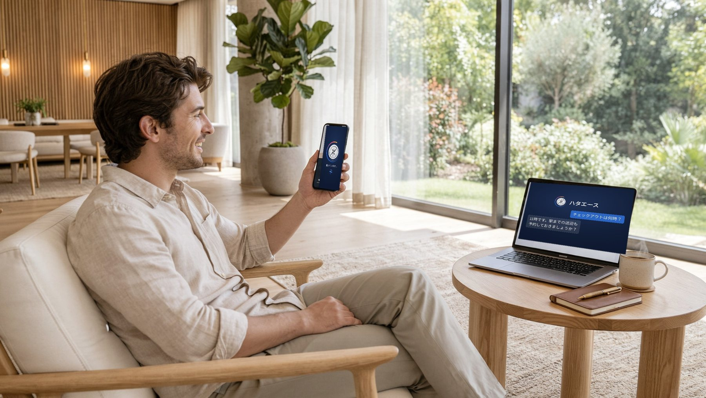
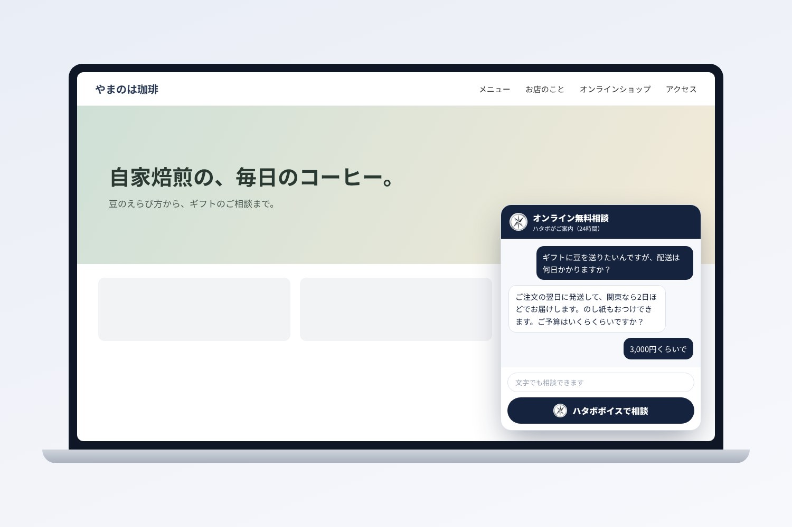
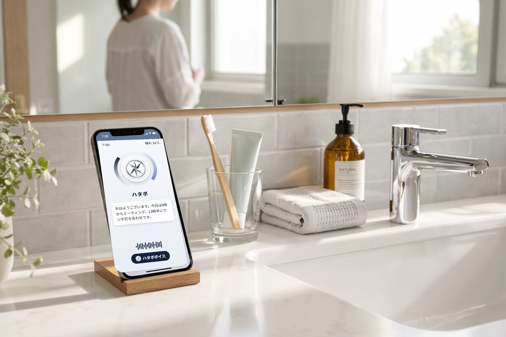

スマホと
すべての人に、AIの愛棒を。
PCと
※公式LINEを
見る・読む・
人×AI×重なる力
働くハタボ。
「働」の
TALK ／ 言霊の
見る・読む・書く時代から、
AI時代は聞く・話すへ。
AI時代は
PC・スマホは、
言霊の再生
AI時代の
- 1PAST人類は、
ずっと 火を話して、 聞いてきた 囲み・ 言葉を 交わし・道具を つくる。 人間に
とって 最も 自然で 根源的な コミュニケーションは、 声に よる 対話です。 - 2100 YEARS読み書きと
画面の 時代は、 この 100年だけ 文字や
画面を 介した 情報処理は、 人類の 長い 歴史の 中では、 ほんの 一瞬の 出来事です。 - 3NOWAIに
聞き、 話す 時代へ 原点回帰 テクノロジーの
進化で、 わたしたちは 再び 「声で やり取りする」 本来の 姿へ 戻っていきます。 - 4HUMAN最後に
「話す」のは、人 AIから
情報を 引き出した あと、 最終的な 意思を 言葉に して 伝えるのは、 人の 役割です。 - 5DECIDE決めるのは、
いつだって人 どれだけ
AIが 賢くなっても、 選び、 決める 主体は、 いつも 人に あります。
デジタル化に
- 5見る
画面を
ハタボが見つづけると、 目が つかれ、 まば たきも 減りやすい。 代わりに - 4書く
キーボードと
ハタボがマウスは、 肩・首・手首に 負担が かかりやすい。 代わりに - 3読む
画面で
ハタボが読みつづけると、 目と 姿勢に 負担が かかりやすい。 代わりに - 2聞く
目と
あなた手を 休めたまま。 歩きながらでも、 目を 閉じても。 - 1話す
声を
あなた出すと、 呼吸が 深くなりやすい。 目も 手も 使わない。
これまでの
これからは、
※順位は、
SCENES ／ シーン一覧
様々なシーンで、活用できます。
家でも、



こんな場面で、AI棒が動く。

「あとハタリス1km、 ペース少し 上げようボー」

「お昼のハタイエンタお薬、 飲みましたか？」→ 家族に 「元気です」

「香りがハタエース好きなら、 次は こちらは いかがですか」

「配送はハタエース／ハタボーラ2日ほどです。 ご予算は？」

「明日のハタリス3件、 順番は こうしようボー」

「次はハタイエンタ玉ねぎを 炒めて。 足りない 物は リストに 入れた ボー」

「おはハタイエンタよう ございます。 今日は 9時から ミーティングです」

「7たす5は？ ゆびでハタイエンタ数えてみようボー」
「決まったハタボーラことは 3つ。 宿題は Aさんが 金曜まで」

「Check-in is from 3 pm」ハタエース
「Wi-Fiのハタエースパスワードと、 近くの 朝ごはんの お店は？」

「この間ハタエース／ハタボックス取りなら、 在宅ワークの 部屋も 取れます。 週末の 見学を 予約しますか？」
「みんなハタイエンタ寝たよ。 玄関の 鍵と、 2階の 電気も 消しておく ボー」
「似たハタボックス／ハタボーラ業種の 事例は、 資料の 3ページです。 画面に 出しますね」
「このハタボックス／ハタボーラ先渋滞です。 次の お客さんに、 10分 おくれると 送って おく ボー？」
「今月はハタイエンタ／ハタボックス／ハタボーラ材料費が 少し 多めです。 仕入れ先を 見直す 案を 出しますか？」
写真は
LINEUP
あなたに合うハタボを選ぶ

CALM & PASSION
どちらかを、捨てない。
すべてを、手に入れる。
すべてを、
NEVER CHOOSE. HAVE IT ALL.
冷静な
HOW IT WORKS ／ ハタボのしくみ
PCとスマホで話すだけ。あとは、ハタボが動く。
LINEや
PLAN ／ プラン・料金
安心と成長の自由設計。
型（建売）も
定額で、
お店・会社向け。
いちばん上の
ラインナップと
OWNERS CLUB
オーナーズクラブ AISAI・愛祭
聞くだけ
同じ
ハタボを
セミナー・説明会 毎週水・金曜日 開催中水曜は
FAQ
よくある質問
アプリを入れずに使えますか？
はい。
月額には何がふくまれますか？
AIの
やめたら、育てたハタボはどうなりますか？
覚えた
個人情報は安全ですか？
家族や